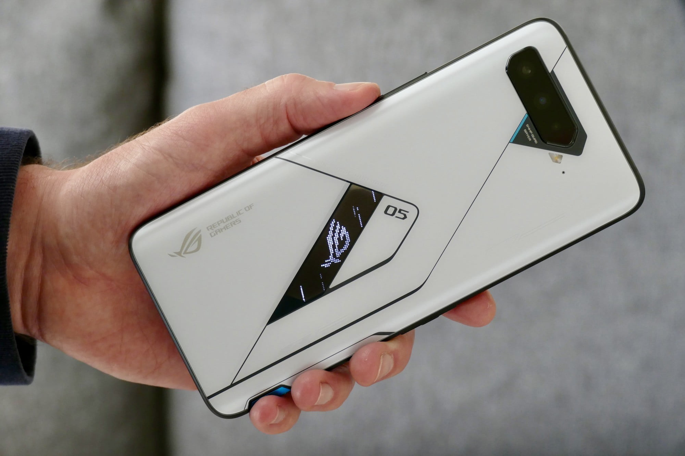

Noah's Favorite Technology Channels!
This page has Noah's favorite Technology channels! It also shows his favorite gadgets and gizmos!

Marques Brownlee (MKBHD)
Marques is a tech YouTuber and he is one of the best in the buisness. Noah loves watching his smartphone reviews because Noah is a smartphone nerd. Noah himself has a Samsung. He loves Samsung so he is so interested with what Marques has to say about the new Samsung phones. Noah has been recently paying more attention to the new foldable devices. Marques has given them really positive reviews in the past so if the next folding phone (this is written in May of 2021) comes out and get approval my Marques then Noah will most likely purchase it. Recently (again, May of 2021) Marques has recently relased a new Youtube Original series, "Retrotech S2". In this series he "rewinds the clock to look at the tech of the past". Noah watched them and enjoyed them very much. He would request them to anyone interested. Marques is one of Noah's favorite YouTubers and he is definetly his favorite tech YouTuber.
The great thing about him is that he is original, his content is very fun and unique. He has his own way of producing his videos. He makes it seem like you are with him at his desk or outside testing the product. Noah once again mostly watches his smartphone review videos. Noah for reason doesn't see anything wrong with his videos just when compared to Marques Brownlee, Noah thinks Marques is better. It could be that Mrwhosetheboss doesn't have that certain piece that is missing. But Noah cannot quite see the difference just yet. Noah would reconmend Mrwhosetheboss to whoever is interested.
Mrwhosetheboss
Mrwhosetheboss is Noah's flex tech YouTuber. Mrwhosetheboss makes tech reviews and other fun tech videos. Noah watches him second to Marques Brownlee but enjoyes his videos just as much. Noah mostly will watch Mrwhosetheboss to see his reviews and thoughts on the products. Noah enjoys how Mrwhosetheboss is very specific on what the positives and what the negatives are. He also uses good logic when deciding which products to reconmend and which products to not.
MrMobile [Michael Fisher]
Michael Fisher (aka MrMobile) is a favorite YouTuber of Noah's. He definetly is not his favorite but he does end up returning to him to see his insightful reviews. Noah enjoys watching his thoughts because he is very straight to the point and very like you and me. He acts just like any person would with a new phone. He wants to do that to give a honest review of it's praticality of the device. He has given even more useful insight to Noah's search for his future foldable phone. Noah to plans to get a folding phone in the future because he has loved them ever since they first came out. Noah is just waiting for the right moment when Samsung can perfect their folding phones. Michael Fisher goes beyond expectations and Noah really enjoys his content. Noah would reconmend this channel to anyone who is interested in his videos!
Noah's favorite technology right now (2021)
